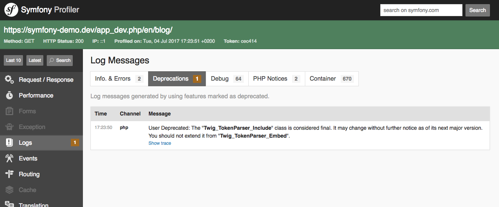

Upgrading a Major Version (e.g. 4.4.0 to 5.0.0)¶
Every two years, Symfony releases a new major version release (the first number changes). These releases are the trickiest to upgrade, as they are allowed to break backward compatibility. However, Symfony makes this upgrade process as smooth as possible.
This means that you can update most of your code before the major release is actually released. This is called making your code future compatible.
There are a couple of steps to upgrading a major version:
- Make your code deprecation free;
- Update to the new major version via Composer;
- Update your code to work with the new version.
1) Make your Code Deprecation Free¶
During the lifecycle of a major release, new features are added and method signatures and public API usages are changed. However, minor versions should not contain any backwards incompatible changes. To accomplish this, the “old” (e.g. functions, classes, etc) code still works, but is marked as deprecated, indicating that it will be removed/changed in the future and that you should stop using it.
When the major version is released (e.g. 5.0.0), all deprecated features and
functionality are removed. So, as long as you’ve updated your code to stop
using these deprecated features in the last version before the major (e.g.
4.4.*), you should be able to upgrade without a problem. That means that
you should first upgrade to the last minor version
(e.g. 4.4) so that you can see all the deprecations.
To help you find deprecations, notices are triggered whenever you end up using a deprecated feature. When visiting your application in the dev environment in your browser, these notices are shown in the web dev toolbar:
Ultimately, you should aim to stop using the deprecated functionality. Sometimes the warning might tell you exactly what to change.
But other times, the warning might be unclear: a setting somewhere might cause a class deeper to trigger the warning. In this case, Symfony does its best to give a clear message, but you may need to research that warning further.
And sometimes, the warning may come from a third-party library or bundle that you’re using. If that’s true, there’s a good chance that those deprecations have already been updated. In that case, upgrade the library to fix them.
Once all the deprecation warnings are gone, you can upgrade with a lot more confidence.
Deprecations in PHPUnit¶
When you run your tests using PHPUnit, no deprecation notices are shown. To help you here, Symfony provides a PHPUnit bridge. This bridge will show you a nice summary of all deprecation notices at the end of the test report.
All you need to do is install the PHPUnit bridge:
1 | $ composer require --dev symfony/phpunit-bridge
|
Now, you can start fixing the notices:
1 2 3 4 5 6 7 8 9 10 11 12 13 14 | # this command is available after running "composer require --dev symfony/phpunit-bridge"
$ ./bin/phpunit
...
OK (10 tests, 20 assertions)
Remaining deprecation notices (6)
The "request" service is deprecated and will be removed in 3.0. Add a type-hint for
Symfony\Component\HttpFoundation\Request to your controller parameters to retrieve the
request instead: 6x
3x in PageAdminTest::testPageShow from Symfony\Cmf\SimpleCmsBundle\Tests\WebTest\Admin
2x in PageAdminTest::testPageList from Symfony\Cmf\SimpleCmsBundle\Tests\WebTest\Admin
1x in PageAdminTest::testPageEdit from Symfony\Cmf\SimpleCmsBundle\Tests\WebTest\Admin
|
Once you fixed them all, the command ends with 0 (success) and you’re
done!
2) Update to the New Major Version via Composer¶
Once your code is deprecation free, you can update the Symfony library via
Composer by modifying your composer.json file and changing all the libraries
starting with symfony/ to the new major version:
1 2 3 4 5 6 7 8 9 10 11 12 13 14 15 16 17 18 19 20 | {
"...": "...",
"require": {
- "symfony/cache": "4.4.*",
+ "symfony/cache": "5.0.*",
- "symfony/config": "4.4.*",
+ "symfony/config": "5.0.*",
- "symfony/console": "4.4.*",
+ "symfony/console": "5.0.*",
"...": "...",
"...": "A few libraries starting with
symfony/ follow their own versioning scheme. You
do not need to update these versions: you can
upgrade them independently whenever you want",
"symfony/monolog-bundle": "^3.5",
},
"...": "...",
}
|
At the bottom of your composer.json file, in the extra block you can
find a data setting for the Symfony version. Make sure to also upgrade
this one. For instance, update it to 5.0.* to upgrade to Symfony 5.0:
1 2 3 4 5 6 7 | "extra": {
"symfony": {
"allow-contrib": false,
- "require": "4.4.*"
+ "require": "5.0.*"
}
}
|
Next, use Composer to download new versions of the libraries:
1 | $ composer update "symfony/*"
|
Dependency Errors¶
If you get a dependency error, it may mean that you also need to upgrade
other libraries that are dependencies of the Symfony libraries. To allow
that, pass the --with-all-dependencies flag:
1 | $ composer update "symfony/*" --with-all-dependencies
|
This updates symfony/* and all packages that those packages depend on.
By using tight version constraints in composer.json, you can control what
versions each library upgrades to.
If this still doesn’t work, your composer.json file may specify a version
for a library that is not compatible with the newer Symfony version. In that
case, updating that library to a newer version in composer.json may solve
the issue.
Or, you may have deeper issues where different libraries depend on conflicting versions of other libraries. Check your error message to debug.
Another issue that may happen is that the project dependencies can be installed on your local computer but not on the remote server. This usually happens when the PHP versions are different on each machine. The solution is to add the platform config option to your composer.json file to define the highest PHP version allowed for the dependencies (set it to the server’s PHP version).
Upgrading other Packages¶
You may also want to upgrade the rest of your libraries. If you’ve done a
good job with your version constraints in composer.json, you can do
this safely by running:
1 | $ composer update
|
Caution
Beware, if you have some unspecific version constraints in your
composer.json (e.g. dev-master), this could upgrade some
non-Symfony libraries to new versions that contain backwards-compatibility
breaking changes.
3) Updating Recipes¶
Over time - and especially when you upgrade to a new version of a library - an updated version of the recipe may be available. These updates are usually minor - e.g. new comments in a configuration file - but it’s a good idea to keep your files in sync with the recipes.
Symfony Flex provides several commands to help upgrade your recipes. Be sure to commit any unrelated changes you’re working on before starting:
New in version 1.6: The recipes commands were introduced in Symfony Flex 1.6.
1 2 3 4 5 6 7 8 | # see a list of all installed recipes and which have updates available
$ composer recipes
# see detailed information about a specific recipes
$ composer recipes symfony/framework-bundle
# update a specific recipes
$ composer recipes:install symfony/framework-bundle --force -v
|
The tricky part of this process is that the recipe “update” does not perform any intelligent “upgrading” of your code. Instead, the updates process re-installs the latest version of the recipe which means that your custom code will be overridden completely. After updating a recipe, you need to carefully choose which changes you want, and undo the rest.
Screencast
For a detailed example, see the SymfonyCasts Symfony 5 Upgrade Tutorial.
4) Update your Code to Work with the New Version¶
In some rare situations, the next major version may contain backwards-compatibility
breaks. Make sure you read the UPGRADE-X.0.md (where X is the new major version)
included in the Symfony repository for any BC break that you need to be aware of.